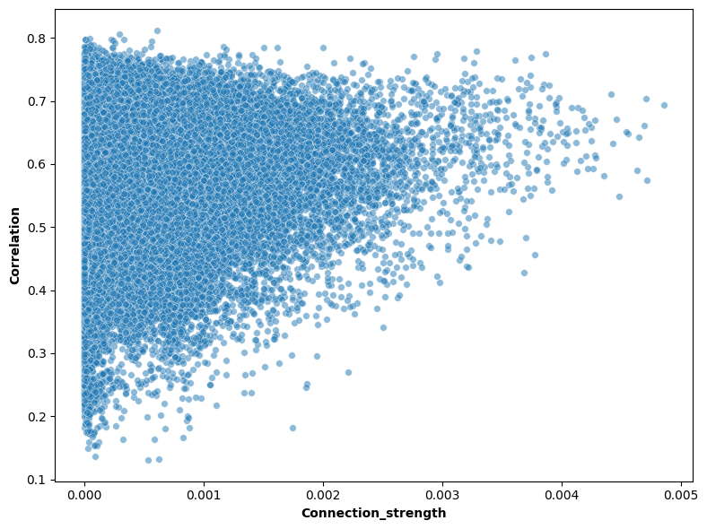
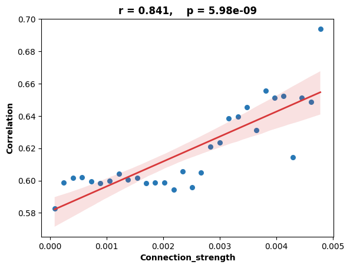
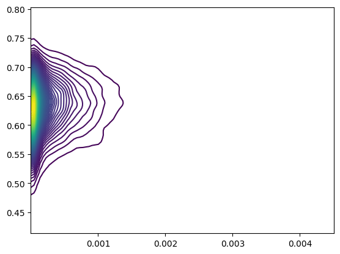
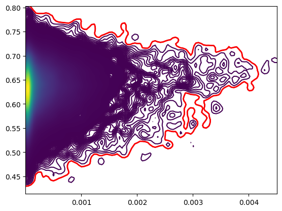
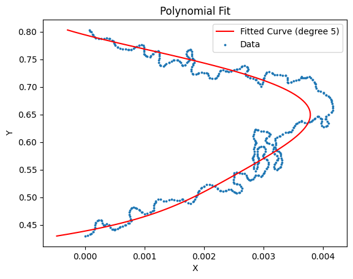
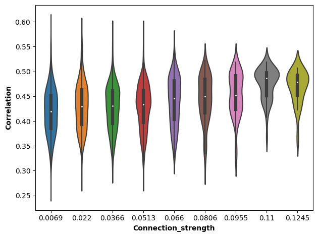

[1]:
import pandas as pd
import scanpy as sc
from tqdm import tqdm
import matplotlib.pyplot as plt
import anndata as ad
import numpy as np
import warnings
from scipy.stats import pearsonr
import seaborn as sns
from scipy.cluster.hierarchy import fcluster, linkage
import matplotlib as mpl
mpl.rcParams['pdf.fonttype'] = 42
mpl.rcParams['ps.fonttype'] = 42
warnings.filterwarnings('ignore')
[2]:
adj = np.load('/mnt/Data18Td/Data/haichao/mouse_connect_data/NT/zxw/mouse_3/zxw_not_symmetric_adj.npy', mmap_mode='r')
print(adj.shape)
adata = sc.read_h5ad('/mnt/Data16Tc/home/haichao/code/SpaCon/ST_NT_cluster/SpaCon_apply_zxw/data/mouse_3/adata_merge.h5ad')
sc.pp.normalize_total(adata, target_sum=1e4)
sc.pp.log1p(adata)
allen_region = pd.read_csv('/mnt/Data16Tc/home/haichao/code/SpaCon/ST_NT_cluster/SpaCon_apply_zxw/data/mouse_3/allen_region.csv')
adata.obs['region'] = allen_region['region'].to_list()
adata.obs['spot_num'] = [i for i in range(adata.n_obs)]
adata
(107909, 107909)
[2]:
AnnData object with n_obs × n_vars = 107909 × 1122
obs: 'x', 'y', 'z', 'section', 'NT_index', 'Cells_id', 'region', 'spot_num'
uns: 'log1p'
subregion th ctx correlation
[3]:
th_regions = ['AD', 'AMd', 'AMv', 'AV', 'CL', 'CM', 'IAD', 'IAM', 'IGL', 'IMD', 'LD', 'LGv', 'LH', 'LP', 'MD', 'MGd', 'MGm', 'MGv', 'MH', 'PCN', 'PF', 'PIL', 'PO', 'POL',
'PP', 'PR', 'PT', 'PVT', 'PoT', 'RE', 'RH', 'RT', 'SGN', 'SMT', 'SPA', 'SPFm', 'SPFp', 'VAL', 'VM', 'VPL', 'VPLpc', 'VPM', 'VPMpc', 'Xi']
ctx_regions = ['ACAd', 'ACAv', 'AId', 'AIp', 'AIv', 'AUDd', 'AUDp', 'AUDpo',
'AUDv', 'ECT', 'FRP', 'GU', 'ILA', 'MOp', 'MOs', 'ORBl', 'ORBm',
'ORBvl', 'PERI', 'PL', 'RSPagl', 'RSPd', 'RSPv', 'SSp-bfd',
'SSp-ll', 'SSp-m', 'SSp-n', 'SSp-tr', 'SSp-ul', 'SSp-un', 'SSs',
'TEa', 'VISC', 'VISa', 'VISal', 'VISam', 'VISl', 'VISli', 'VISp',
'VISpl', 'VISpm', 'VISpor', 'VISrl']
adata_ctx_th_area = adata[(adata.obs['region'].str.startswith(tuple(ctx_regions))) | (adata.obs['region'].isin(th_regions))]
adata_ctx_th_area.obs['CT_spot_num'] = [i for i in range(adata_ctx_th_area.n_obs)]
adata_ctx_th_area.obs['ctx_or_th'] = 'nan'
for c in ctx_regions:
adata_ctx_th_area.obs.loc[adata_ctx_th_area.obs['region'].str.startswith(c), 'ctx_or_th'] = 'ctx'
for c in th_regions:
adata_ctx_th_area.obs.loc[adata_ctx_th_area.obs['region']==c, 'ctx_or_th'] = 'th'
adata_ctx_th_area.obs
[3]:
| x | y | z | section | NT_index | Cells_id | region | spot_num | CT_spot_num | ctx_or_th | |
|---|---|---|---|---|---|---|---|---|---|---|
| 2 | 19.113418 | 23.994053 | 46.894548 | Zhuang-ABCA-3.005 | 2 | 188949490498702611647640449216501815503_304478... | FRP1 | 0 | 0 | ctx |
| 4 | 18.921382 | 24.017347 | 49.257099 | Zhuang-ABCA-3.004 | 4 | 123445075025856302518661678660778224944_131347... | FRP1 | 1 | 1 | ctx |
| 6 | 19.079053 | 23.564575 | 51.258567 | Zhuang-ABCA-3.003 | 6 | 319072152716142889780926524544977408256_106358... | FRP1 | 2 | 2 | ctx |
| 7 | 18.816739 | 25.041919 | 43.046671 | Zhuang-ABCA-3.007 | 7 | 47102176527243727968506801819481818675_1792889... | FRP1 | 3 | 3 | ctx |
| 9 | 18.792692 | 25.077860 | 45.101231 | Zhuang-ABCA-3.006 | 9 | 199428730039264634225478952930502449426_202483... | FRP1 | 4 | 4 | ctx |
| ... | ... | ... | ... | ... | ... | ... | ... | ... | ... | ... |
| 148907 | 94.906133 | 15.937666 | 42.404653 | Zhuang-ABCA-3.007 | 148907 | 106526352840576802488939912804342681931_107003... | RSPd1 | 75568 | 33095 | ctx |
| 148919 | 95.201531 | 17.993761 | 40.377543 | Zhuang-ABCA-3.008 | 148919 | 133921573428284040813862276100319739380_145548... | RSPd1 | 75574 | 33096 | ctx |
| 148971 | 96.095220 | 15.844123 | 42.457680 | Zhuang-ABCA-3.007 | 148971 | 149021058656557956290496348449572943108_174675... | RSPd1 | 75604 | 33097 | ctx |
| 148993 | 97.188915 | 11.409533 | 46.662115 | Zhuang-ABCA-3.005 | 148993 | 107188929587695452503950023602364017291_167314... | RSPd1 | 75616 | 33098 | ctx |
| 193053 | 104.490816 | 24.420635 | 25.679869 | Zhuang-ABCA-3.015 | 193053 | 43354620289828560228522986006306173486 | VISpl1 | 99924 | 33099 | ctx |
33100 rows × 10 columns
[4]:
# Generate ROIs
mergecell_num = 20
def cluster_region(df_region, num_points=mergecell_num):
# Perform hierarchical cluster
Z = linkage(df_region[['x', 'y', 'z']], method='ward')
# Divided into clusters according to the results of the cluster, each cluster has about NUM_POINTS individual points
cluster_labels = fcluster(Z, t=len(df_region) / num_points, criterion='maxclust')
return cluster_labels
# Initialize a empty cluster label
adata_ctx_th_area.obs['subregion'] = 0
# Perform clusters separately for each area
for region in adata_ctx_th_area.obs['region'].unique():
mask = adata_ctx_th_area.obs['region'] == region
if adata_ctx_th_area[adata_ctx_th_area.obs['region'] == region].shape[0] < 15:
adata_ctx_th_area.obs.loc[mask, 'subregion'] = adata_ctx_th_area.obs.loc[mask, 'region'].apply(lambda x: x + '_1')
continue
clu_list = cluster_region(adata_ctx_th_area.obs[mask])
cl_list = [f'{region}_{i}' for i in clu_list]
adata_ctx_th_area.obs.loc[mask, 'subregion'] = cl_list
adata_ctx_th_area.obs
[4]:
| x | y | z | section | NT_index | Cells_id | region | spot_num | CT_spot_num | ctx_or_th | subregion | |
|---|---|---|---|---|---|---|---|---|---|---|---|
| 2 | 19.113418 | 23.994053 | 46.894548 | Zhuang-ABCA-3.005 | 2 | 188949490498702611647640449216501815503_304478... | FRP1 | 0 | 0 | ctx | FRP1_2 |
| 4 | 18.921382 | 24.017347 | 49.257099 | Zhuang-ABCA-3.004 | 4 | 123445075025856302518661678660778224944_131347... | FRP1 | 1 | 1 | ctx | FRP1_1 |
| 6 | 19.079053 | 23.564575 | 51.258567 | Zhuang-ABCA-3.003 | 6 | 319072152716142889780926524544977408256_106358... | FRP1 | 2 | 2 | ctx | FRP1_1 |
| 7 | 18.816739 | 25.041919 | 43.046671 | Zhuang-ABCA-3.007 | 7 | 47102176527243727968506801819481818675_1792889... | FRP1 | 3 | 3 | ctx | FRP1_2 |
| 9 | 18.792692 | 25.077860 | 45.101231 | Zhuang-ABCA-3.006 | 9 | 199428730039264634225478952930502449426_202483... | FRP1 | 4 | 4 | ctx | FRP1_2 |
| ... | ... | ... | ... | ... | ... | ... | ... | ... | ... | ... | ... |
| 148907 | 94.906133 | 15.937666 | 42.404653 | Zhuang-ABCA-3.007 | 148907 | 106526352840576802488939912804342681931_107003... | RSPd1 | 75568 | 33095 | ctx | RSPd1_3 |
| 148919 | 95.201531 | 17.993761 | 40.377543 | Zhuang-ABCA-3.008 | 148919 | 133921573428284040813862276100319739380_145548... | RSPd1 | 75574 | 33096 | ctx | RSPd1_3 |
| 148971 | 96.095220 | 15.844123 | 42.457680 | Zhuang-ABCA-3.007 | 148971 | 149021058656557956290496348449572943108_174675... | RSPd1 | 75604 | 33097 | ctx | RSPd1_3 |
| 148993 | 97.188915 | 11.409533 | 46.662115 | Zhuang-ABCA-3.005 | 148993 | 107188929587695452503950023602364017291_167314... | RSPd1 | 75616 | 33098 | ctx | RSPd1_2 |
| 193053 | 104.490816 | 24.420635 | 25.679869 | Zhuang-ABCA-3.015 | 193053 | 43354620289828560228522986006306173486 | VISpl1 | 99924 | 33099 | ctx | VISpl1_2 |
33100 rows × 11 columns
[6]:
regions = adata_ctx_th_area.obs['subregion'].values
gene_expression = adata_ctx_th_area.X.A
# Create a DataFrame to integrate regional information and gene expression matrix together
df = pd.DataFrame(gene_expression, columns=adata.var_names)
df['subregion'] = regions
# Calculate the average gene expression by regional grouping and calculate the average gene
region_mean_expression = df.groupby('subregion').mean()
# Convert the result to the matrix format of the regional*gene
region_gene_matrix = region_mean_expression.values
region_gene_matrix.shape
[6]:
(1719, 1122)
[7]:
corr_all = np.corrcoef(region_gene_matrix)
corr_all.shape
[7]:
(1719, 1719)
[8]:
adata_th = adata_ctx_th_area[adata_ctx_th_area.obs['ctx_or_th'] == 'th']
th_subregions = adata_th.obs['subregion'].unique()
th_subregions.shape
[8]:
(244,)
[9]:
adata_ctx = adata_ctx_th_area[adata_ctx_th_area.obs['ctx_or_th'] == 'ctx']
ctx_subregions = adata_ctx.obs['subregion'].unique()
ctx_subregions.shape
[9]:
(1475,)
[10]:
region_labels = region_mean_expression.index
ctx_indices = [i for i, label in enumerate(region_labels) if label in ctx_subregions]
th_indices = [i for i, label in enumerate(region_labels) if label in th_subregions]
corr = corr_all[np.ix_(ctx_indices, th_indices)]
corr.shape
[10]:
(1475, 244)
[11]:
ctx_regions_df = [region_labels[i] for i in ctx_indices]
th_regions_df = [region_labels[i] for i in th_indices]
corr_df = pd.DataFrame(corr, index=ctx_regions_df, columns=th_regions_df)
corr_df
[11]:
| AD_1 | AMd_1 | AMd_2 | AMv_1 | AV_1 | AV_2 | AV_3 | AV_4 | AV_5 | CL_1 | ... | VPM_23 | VPM_3 | VPM_4 | VPM_5 | VPM_6 | VPM_7 | VPM_8 | VPM_9 | VPMpc_1 | VPMpc_2 | |
|---|---|---|---|---|---|---|---|---|---|---|---|---|---|---|---|---|---|---|---|---|---|
| ACAd1_1 | 0.596044 | 0.629380 | 0.629344 | 0.640548 | 0.625990 | 0.616779 | 0.625027 | 0.579291 | 0.607824 | 0.661248 | ... | 0.546631 | 0.580518 | 0.560330 | 0.552390 | 0.588024 | 0.567292 | 0.550110 | 0.595391 | 0.673908 | 0.651029 |
| ACAd2/3_1 | 0.597459 | 0.627501 | 0.638063 | 0.645888 | 0.624184 | 0.613061 | 0.610360 | 0.584868 | 0.599027 | 0.632073 | ... | 0.563330 | 0.591786 | 0.587295 | 0.583098 | 0.590525 | 0.565894 | 0.574953 | 0.613022 | 0.647487 | 0.650415 |
| ACAd2/3_2 | 0.571027 | 0.595831 | 0.606491 | 0.613162 | 0.593237 | 0.584572 | 0.577454 | 0.553500 | 0.566546 | 0.593970 | ... | 0.539473 | 0.565224 | 0.567445 | 0.557278 | 0.561655 | 0.535150 | 0.554062 | 0.588653 | 0.610546 | 0.617166 |
| ACAd2/3_3 | 0.553607 | 0.575565 | 0.594226 | 0.598235 | 0.573342 | 0.568132 | 0.569627 | 0.543022 | 0.554639 | 0.581051 | ... | 0.514714 | 0.539524 | 0.537075 | 0.534365 | 0.534878 | 0.514530 | 0.527182 | 0.561045 | 0.591705 | 0.611740 |
| ACAd5_1 | 0.630058 | 0.641793 | 0.647781 | 0.654390 | 0.634837 | 0.628741 | 0.631047 | 0.606152 | 0.623477 | 0.657897 | ... | 0.572636 | 0.597883 | 0.591053 | 0.575654 | 0.597200 | 0.584400 | 0.576911 | 0.614796 | 0.669636 | 0.661564 |
| ... | ... | ... | ... | ... | ... | ... | ... | ... | ... | ... | ... | ... | ... | ... | ... | ... | ... | ... | ... | ... | ... |
| VISrl4_1 | 0.608806 | 0.629851 | 0.637136 | 0.650792 | 0.617430 | 0.627219 | 0.614035 | 0.611263 | 0.604888 | 0.627469 | ... | 0.577205 | 0.623548 | 0.610158 | 0.606235 | 0.613583 | 0.559556 | 0.614110 | 0.639994 | 0.649961 | 0.646791 |
| VISrl5_1 | 0.649082 | 0.647604 | 0.668424 | 0.675256 | 0.653244 | 0.647948 | 0.637781 | 0.631115 | 0.636032 | 0.648355 | ... | 0.617031 | 0.645198 | 0.637634 | 0.624230 | 0.644994 | 0.610415 | 0.630391 | 0.650415 | 0.684320 | 0.669412 |
| VISrl5_2 | 0.643372 | 0.636174 | 0.654321 | 0.670814 | 0.631363 | 0.641428 | 0.625480 | 0.634172 | 0.618452 | 0.648326 | ... | 0.587593 | 0.635670 | 0.617376 | 0.604309 | 0.627833 | 0.580243 | 0.623062 | 0.645508 | 0.675442 | 0.656189 |
| VISrl6a_1 | 0.587644 | 0.558709 | 0.591176 | 0.606841 | 0.577877 | 0.581434 | 0.567537 | 0.566168 | 0.559256 | 0.581017 | ... | 0.536177 | 0.560639 | 0.547816 | 0.527045 | 0.555997 | 0.526904 | 0.540306 | 0.558628 | 0.609119 | 0.590757 |
| VISrl6b_1 | 0.657098 | 0.647202 | 0.689478 | 0.700880 | 0.679191 | 0.673361 | 0.654070 | 0.618012 | 0.638369 | 0.687741 | ... | 0.614595 | 0.632637 | 0.627957 | 0.580900 | 0.653153 | 0.615239 | 0.588846 | 0.612918 | 0.721750 | 0.671169 |
1475 rows × 244 columns
connection
ctx2th conn
[12]:
ctx_ave_list = []
for c in tqdm(ctx_regions_df):
adata_ctx_area = adata_ctx_th_area[adata_ctx_th_area.obs['subregion'] == c]
# break
idx = adata_ctx_area.obs['spot_num'].tolist()
temp = np.mean(adj[idx], axis=0)
ctx_ave_list.append(temp)
# break
ctx2th_ave = np.vstack(ctx_ave_list)
ctx2th_ave.shape
100%|██████████| 1475/1475 [09:42<00:00, 2.53it/s]
[12]:
(1475, 107909)
[13]:
th_ave_list = []
for th_region in tqdm(th_regions_df):
adata_th_area = adata_ctx_th_area[adata_ctx_th_area.obs['subregion'] == th_region]
# break
idx = adata_th_area.obs['spot_num'].tolist()
# break
temp = np.mean(ctx2th_ave[:, idx], axis=1)
th_ave_list.append(temp)
ctx2th_ave = np.column_stack(th_ave_list)
conn_df = pd.DataFrame(data=ctx2th_ave, index=ctx_regions_df, columns=th_regions_df, dtype=float)
ctx2th_ave.shape
100%|██████████| 244/244 [00:00<00:00, 359.77it/s]
[13]:
(1475, 244)
[14]:
corr = corr.flatten()
conn = ctx2th_ave.flatten()
plt.figure(figsize=(8, 6))
ax = sns.scatterplot(conn, corr, s=30, alpha=0.5)
plt.xlabel('Connection_strength', fontweight='bold')
plt.ylabel('Correlation', fontweight='bold')
plt.tight_layout()

[28]:
df = pd.DataFrame({'Correlation': corr,
'Connection_strength': conn})
# df = df[df['Connection_strength'] > 0.0005]
min_corr = df['Connection_strength'].min()
max_corr = df['Connection_strength'].max()
bins = np.linspace(0, max_corr, 31)
df['group'] = pd.cut(df['Connection_strength'], bins, include_lowest=False)
result = df.groupby('group')['Correlation'].median().reset_index()
result['Connection_strength'] = result['group'].apply(lambda x: (x.left + x.right) / 2)
result = result.dropna(subset=['Correlation'])
import scipy.stats as stats
correlation, p_value = pearsonr(result['Connection_strength'], result['Correlation'])
sns.regplot(data=result, x="Connection_strength", y="Correlation",
scatter_kws={'s': 30, 'color': '#2878B5', 'alpha': 1, 'marker': 'o'},
line_kws={'linewidth': 2, 'color': '#D8383A', 'linestyle': '-'})
slope, intercept, r_value, p_value, std_err = stats.linregress(result["Connection_strength"], result["Correlation"])
print(f"(slope): {slope}")
# plt.text(0.95, 0.01, f'Corr: {correlation:.2f}', ha='right', va='bottom', transform=plt.gca().transAxes)
plt.title(f'r = {correlation:.3f}, p = {p_value:.2e}', fontweight='bold')
plt.xlabel('Connection_strength', fontweight='bold')
plt.ylabel('Correlation', fontweight='bold')
plt.savefig('./th_ctx_corr_conn_scatter_line.pdf', format='pdf')
# plt.savefig(f'/mnt/Data16Tc/home/haichao/code/SpaCon/PaperFig/new_brief_comm_fig2/th_ctx_region_correlation/zxw3_all_40bins_merge{mergecell_num}cell.png', dpi=600)
斜率 (slope): 15.42913379110221

[33]:
from scipy.stats import gaussian_kde
x = conn
y = corr
# Create a grid
xi, yi = np.mgrid[x.min():x.max():100j, y.min():y.max():100j]
# Calculate nuclear density estimation
positions = np.vstack([xi.ravel(), yi.ravel()])
values = np.vstack([x, y])
kernel = gaussian_kde(values)
z = np.reshape(kernel(positions).T, xi.shape)
# Draw scattered dots and outlines
fig, ax = plt.subplots()
# ax.scatter(x, y, c='k', alpha=0.3)
ax.contour(xi, yi, z, levels=100, cmap='viridis')
plt.show()

[34]:
fig, ax = plt.subplots()
contour_set = ax.contour(xi, yi, z, levels=10000, cmap='viridis')
# Get the outermost contour (that is, the first outline)
outermost_contour = contour_set.collections[1]
# Extract the exterior outline path
paths = outermost_contour.get_paths()
outermost_path = paths[0]
# Draw the outermost outline
ax.plot(outermost_path.vertices[:, 0], outermost_path.vertices[:, 1], 'r-', linewidth=2)
plt.show()
# Get the coordinates of the outermost contour
outermost_contour_coords = outermost_path.vertices
Locator attempting to generate 8165 ticks ([0.0, ..., 32656.0]), which exceeds Locator.MAXTICKS (1000).

[35]:
x_data = outermost_path.vertices[:, 1]
y_data = outermost_path.vertices[:, 0]
# Select the order of polynomial (you can adjust to get better fitting)
degree = 5
# Use Numpy's polynomial fitting
coeffs = np.polyfit(x_data, y_data, degree)
poly = np.poly1d(coeffs)
# Point to generate the fit curve
x_fit = np.linspace(min(x_data), max(x_data), 100)
y_fit = poly(x_fit)
# Draw the original data point and fit curve
plt.scatter(y_data, x_data, label='Data', s=3)
plt.plot(y_fit, x_fit, 'r-', label=f'Fitted Curve (degree {degree})')
plt.legend()
plt.xlabel('X')
plt.ylabel('Y')
plt.title('Polynomial Fit')
plt.show()
# Print polynomial coefficient
print("Polynomial coefficient (from high -level to low -level):")
for i, coeff in enumerate(coeffs):
print(f"x^{degree-i}: {coeff:.4f}")

多项式系数（从高阶到低阶）:
x^5: 12.8520
x^4: -39.7188
x^3: 48.3887
x^2: -29.1442
x^1: 8.7148
x^0: -1.0373
[97]:
plt.figure(figsize=(8, 6))
ax = sns.scatterplot(conn, corr, s=30, alpha=0.5)
ax.plot(y_fit, x_fit, 'r--', label=f'Fitted Curve (degree {degree})', linewidth=2)
plt.xlabel('Connection_strength', fontweight='bold')
plt.ylabel('Correlation', fontweight='bold')
plt.xlim(0, 0.005)
ax.set_xticks([0.000, 0.001, 0.002, 0.003, 0.004, 0.005]) # Set the X -axis scale
ax.set_yticks([0.2, 0.4, 0.6, 0.8]) # Set y -axial scale
plt.tight_layout()
# plt.savefig('./corr_conn_scatter.png', dpi=600)

[ ]:
from scipy.stats import skew, kurtosis, normaltest, jarque_bera
# Polynomial coefficient (from high -level to low -level)
coefficients = coeffs
# Define the polynomial function
poly_func = np.poly1d(coefficients)
# Generate X value
x = np.linspace(min(x_data), max(x_data), 1000)
# Calculate the Y value of polynomial
data = poly_func(x)
# Calculation bias and peak degree
skewness = skew(data)
kurt = kurtosis(data) + 3 # Scipy's Kurtosis function returns the peak degree (Excess Kurtosis), you need to add 3 to get the peak degree
print(f"skewness: {skewness}")
print(f"kurt: {kurt}")
# D'Agostino's K-squared test
k2_stat, k2_p_value = normaltest(data)
print(f"D'Agostino's K-squared: {k2_stat}")
print(f"p: {k2_p_value}")
# Jarque-Bera test
jb_stat, jb_p_value = jarque_bera(data)
print(f"Jarque-Bera: {jb_stat}")
print(f"p: {jb_p_value}")
[17]:
df = pd.DataFrame({'Correlation': corr,
'Connection_strength': conn})
min_corr = df['Connection_strength'].min()
max_corr = df['Connection_strength'].max()
bins = np.linspace(min_corr, max_corr, 10)
df['group'] = pd.cut(df['Connection_strength'], bins, include_lowest=True)
df['Connection_strength'] = df['group'].apply(lambda x: round(((x.left + x.right) / 2), 4))
sns.violinplot(x='Connection_strength', y='Correlation', data=df)
plt.xlabel('Connection_strength', fontweight='bold')
plt.ylabel('Correlation', fontweight='bold')
plt.tight_layout()
